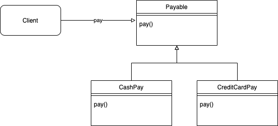
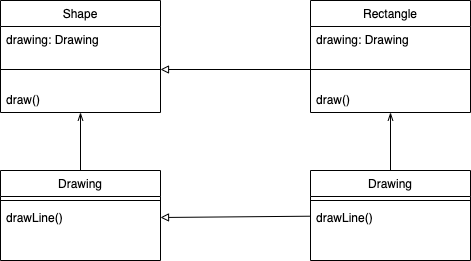
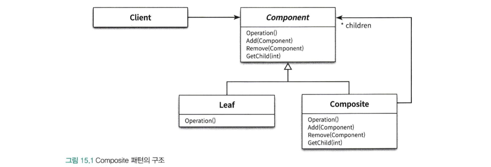
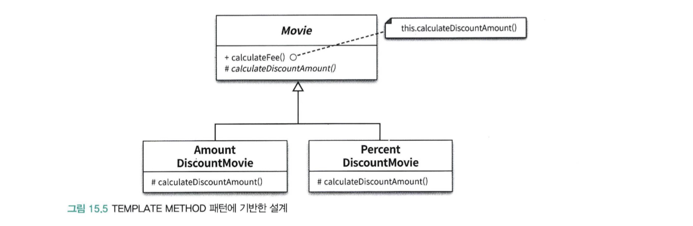
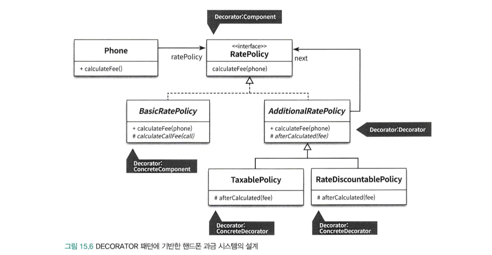

디자인 패턴
애플리케이션을 설계하다 보면 어떤 요구사항을 해결하기 위해 과거에 경험했던 유사한 해결방법을 다시금 사용하는 경우가 있다.
소프트웨어 설계에서 반복적으로 발생하는 문제에 대해 반복적으로 적용할 수 있는 해결방법을 디자인 패턴 이라고 부른다.
디자인 패턴은 특정한 변경을 일관성 있게 다룰 수 있는 협력 템플릿 을 제공한다
프레임워크
설계와 코드를 함께 재사용하기 위한 것을 프레임워크 라고 부른다.
프레임워크는 애플리케이션의 아키텍처를 구현 코드의 형태로 제공한다.
프레임워크에서 제공하는 아키텍처가 적합하다면 다양한 환경에서 테스트를 거친 견고한 구현 코드를 쉽고 빠르게 재사용할 수 있다.
프레임워크는 각 애플리케이션의 요구에 따라 적절하게 커스터마이징할 수 있는 확장 포인트를 제공한다
프레임워크는 일관성 있게 다룰 수 있는 확장 가능한 코드 템플릿 을 제공한다.
소프트웨어 패턴
패턴이랑 무엇인가를 논의할 때면 반복적으로 언급되는 몇 가지 핵심적인 특징이 있다.
- 패턴은 반복적으로 발생하는 문제와 해법의 쌍으로 정의된다.
- 패턴을 사용함으로써 이미 알려진 문제와 이에 대한 해법을 문서로 정리할 수 있으며, 이 지식을 다른 사람과 의사소통할 수 있다.
- 패턴은 추상적인 원칙과 실제 코드 작성 사이의 간극을 메워주며 실질적인 코드 작성을 돕는다.
- 패턴의 요점은 패턴이 실무에서 탄생했다는 점이다.
마틴 파울러의 <Analysis Pattern>
패턴 정의는 하나의 실무 컨텍스트에서 유용하게 사용해왔고 다른 실무 컨텍스트에서도 유용할 것이라고 예상되는 아이디어다
아이디어라는 용어를 사용하는 이유는 어떤 것도 패턴이 될 수 있기 때문이다.
협력하는 객체그룹이 될 수도 있고, 프로젝트의 조직 원리가 될 수도 있다.
실무 컨텍스트라는 용어는 패턴이 실제 프로젝트의 실무 경험에서 비록됐다는 사실을 반영한다.
패턴은 한 컨텍스트에서 유용한 동시에 다른 컨텍스트에서도 유용한 아이디어 이다.
일반적으로 패턴으로 인정하기 위해서는 최소 3가지의 서로 다른 시스템에 특별한 문제 없이 적용할 수 있고, 유용한 경우에만 패턴으로 간주할 수 있다.
패턴은 경험의 산물이다.
패턴이 지닌 가장 큰 가치는 경험을 통해 축적된 실무 지식을 효과적으로 요약하고 전달할 수 있다는 점이다.
패턴은 경험의 산물이다.
따라서 실무 경험이 적은 초보자라고 하더라고 패턴을 익히고 반복적으로 적용하는 과정 속에서 유연하고 품질 높은 소프트웨어를 개발하는 방법을 익힐 수 있게 된다.
패턴의 이름은 높은 수준의 대화를 가능하게 한다.
패턴을 모르는 사람은 아래 처럼 말 뜻을 풀어서 어렵고 길게 말한다
“인터페이스를 하나 추가하고 이 인터페이스를 구체화하는 클래스를 만들고 생성자나 setter 메서드를 통해 runtime에 알고리즘을 바꿀 수 있게 하자”
패턴을 아는 사람은
“STRATEGY 패턴 적용하시죠” 라고 간단하고 명확하게 말할 수 있기 때문이다.
패턴 분류
패턴을 분류하는 가장 일반적인 방법은 패턴의 범위나 적용 단계에 따라 4가지로 분류된다.
- 디자인 패턴(Design Pattern)
- 특정 상황 내에서 일반적인 설계 문제를 해결하며 협력하는 컴포넌트들 사이에서 반복적으로 발생하는 구조를 서술한다
- 특정한 설계문제를 해결하는 것을 목적으로 함
- 프로그래밍 언어나 패러다임에 독립적이다
- 아키텍처 패턴 (Architecture Pattern)
- 소프트웨어의 전체적인 구조를 결정하기 위해 사용
- 미리 정의된 서브시스템들을 제공하고 서브시스템들의 책임, 관계를 조직화하는 규칙과 가이드를 제공한다
- 분석 패턴(Analysis Pattern)
- 도메인 내의 개념적인 문제를 해결하는 데 초점을 맞춘다
- 업무 모델링 시에 발견되는 공통적인 구조를 표현하는 개념들의 집합
- 이디엄(Idiom)
- 특정 프로그래밍 언어에만 국한된 패턴이다
- 주어진 언어의 기능/특성을 이용해 컴포넌트 간의 특정 측면을 구현하는 방법을 서술
- C++에서는 객체가 스스로 자신을 참조하는 객체들의 개수를 카운트 해서 더 이상 자신이 참조되지 않으면 스스로를 삭제하는 COUNT POINTER라는 이디엄이 있다.
- 하지만 JVM기반의 언어에서는 참조 되지 않은 객체들은 가비지 컬렉터에 의해 자동으로 삭제되기에 COUNT POINTER 이디엄은 유용하지 않다.
자주 쓰이는 디자인 패턴
패턴은 공통으로 사용할 수 있는 역할, 책임, 협력의 템플릿이다.
패턴은 반복적으로 발생하는 문제를 해결하기 위해 사용할 수 있는 공통적인 역할과 책임, 협력의 훌륭한 예제를 제공한다
STRATEGY Pattern
STRATEGY Pattern은 다양한 알고리즘을 동적으로 교체할 수 있는 역할과 책임의 집합을 제공한다
- 로직내의 변하지 않는 부분을 추상화 하여 추상클래스나 인터페이스로 분리한다
- 구체적인 내용은 구체 클래스를 구현하여 메세지를 정의한다

BRIDGE Pattern
BRIDGE Pattern은 추상화의 조합으로 인한 클래스의 폭발적인 증가 문제를 해결하기 위해 역할과 책임을 추상화와 구현의 두 개의 커다란 집합으로 분해하여
설계를 확장 가능하게 만든다.

COMPOSITE Pattern
COMPOSITE Pattern은 객체들을 트리구조로 구성하여 그릇 객체와 내용물 객체를 동일하게 취급할 수 있도록 만들기 위한 패턴

TEMPLATE METHOD Pattern
TEMPLATE METHOD Pattern은 부모 클래스가 알고리즘의 기본 구조를 정의하고 구체적인 내용은 자식 클래스에서 정의하게 함으로써 변경을 캡슐화할 수 있는 디자인 패턴이다

calculateFee 메서드에서 추상 메서드인 calculateDiscountAmount() 메서드를 호출한다
추상 메서드 calculateDiscountAmount는 하위 클래스인 AmountDiscoutMovie, PercentDiscoutMovie 에서 직접 구현한다
그렇게 하면 calculateFee 메서드는 변경없이 사용할 수 있고 calculateDiscountAmount 메서드를 통해 기능을 확장할 수 있다.
DECORATOR Pattern
DECORATOR Pattern은 객체의 행동을 동적으로 추가할 수 있게 해주는 패턴으로 기본적으로 객체의 행동을 결합하기 위해 객체 합성을 이용한다.

- BasicRatePolicy는 실제 역할을하는 ConcreteComponent이다
- AdditionalRatePolicy는 요건들을 더 추가할 수 있는 Decorator이다
코드 재사용과 설계 재사용
코드 재사용, 설계 재사용 한쪽만 남용하는 방법은 좋지 않다.
가장 이상적인 재사용 방법은 설계 재사용과 코드 재사용을 적절한 수준으로 조합하는 것이다.
프레임워크란
- 추상 클래스나 인터페이스를 정의하고 인스턴스 사이의 상호작용을 통해 시스템 전체 혹은 일부를 구현해 놓은 재사용 가능한 설계
- 애플리케이션 개발자가 현재의 요구사항에 맞게 커스터마이징할 수 있는 application skeleton (설계와 코드 재사용)
프레임워크는 코드를 재사용함으로써 설계 아이디어를 재사용한다.
프레임워크는 애플리케이션의 아키텍처를 제공하며 문제 해결에 필요한 설계 결정과 이에 필요한 기반 코드를 함께 포함한다.
애플리케이션을 확장할 수 있도록 부분적으로 구현된 추상 클래스와 인터페이스 집합뿐만 아니라 추가적인 작업 없이도 재사용 가능한 다양한 종류의 컴포넌트도 함께 제공한다
제어 역전 원리
의존성 역전 원리는 전통적인 설계 방법과 객체지향을 구분하는 가장 핵심적인 원리다.
의존성 역전 원리에 따라 구축되지 않은 시스템은 협력 흐름을 재사용할 수도 없으며 변경에 유연하게 대처할 수도 없다.
시스템이 진화하는 방향에는 항상 의존성 역전 원리를 따르는 설계가 존재해야 한다.
만약 요구사항이 빠르게 진화하는 코드에서 의존성 역전 원리가 적절하게 지켜지지 않고 있다면 그곳에는 변경을 적절하게 수용할 수 없는 하향식 코드만 남을 뿐이다.
프레임워크에서는 일반적인 해결책만 제공하고 애플리케이션에 따라 달라질 수 있는 특정한 동작은 비워둔다
그리고 이렇게 완성되지 않은 채로 남겨진 동작을 훅(Hook) 이라고 부른다
훅은 프레임워크 코드에서 호출하는 프레임워크의 특정 부분이다. 재정의된 훅은 제어 역전 원리에 따라 프레임워크가 원하는 시점에 호출 된다.
여기서 협력을 제어하는 것은 프레임워크이다.
이 말 자체가 제어 역전 원리이다.
전통적인 방식에서는 개발자가 개발한 코드를 실행하기 위해서는 개발자가 직접 객체를 생성해서 메시지를 객체에 날려야 했다.
하지만 프레임워크에서는 프레임워크 내의 코드가 개발자가 개발한 코드를 실행한다.
이러한 제어의 역전이 프레임워크의 핵심 개념이자 코드의 재사용을 가능하게 하는 힘이다.
참고
- Objects(코드로 이해하는 객체지향 설계) - chapter15. 디자인 패턴과 프레임워크